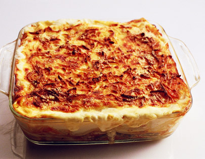

Creamy Chicken Lasagna
This is an unusual but fantastic combination. Everyone that tastes it raves!

Ingredients :
- 3 skinless, boneless chicken breast halves
- 6 uncooked lasagna noodles
- 1 cube chicken bouillon
- ¼ cup hot water
- 1 (8 ounce) package cream cheese, softened
- 2 cups shredded mozzarella cheese
- 1 (26 ounce) jar spaghetti sauce
Directions :
- Bring a large pot of lightly salted water to a boil. Cook lasagna noodles for 8 to 10 minutes, or until al dente. Drain, rinse with cold water, and set aside.
- Meanwhile, place the chicken in a saucepan with enough water to cover, and bring to a boil. Cook for 20 minutes, or until no longer pink and juices run clear. Remove from saucepan, and shred.
- Preheat oven to 350 degrees F (175 degrees C). Dissolve the bouillon cube in hot water. In a large bowl, mix the chicken with the bouillon, cream cheese, and 1 cup mozzarella cheese.
- Spread 1/3 of spaghetti sauce in the bottom of a 9x13 inch baking dish. Cover with the chicken mixture, and top with 3 lasagna noodles; repeat. Top with remaining sauce, and sprinkle with remaining mozzarella cheese.
- Bake for 45 minutes in the preheated oven.
Nutrition Facts:
Per Serving: 495 calories; protein 28g; carbohydrates 36.2g; fat 26.4g; cholesterol 103.5mg; sodium 1060.5mg.
Return to Main Recipes Page